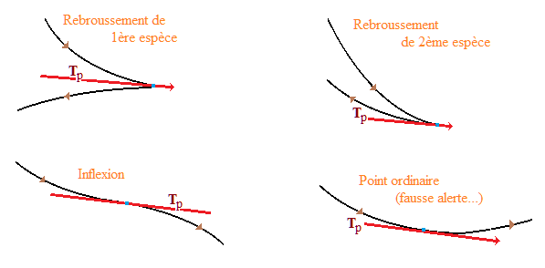

| Choisissez votre langue ! | Choose your language ! |
Si dans le cas de l'ellipse on peut tout simplement copier cette définition, il n'en va pas de même pour les paraboles et les hyperboles pour lesquelles on peut trouver des droites n'ayant qu'un point commun avec la conique et ne correspondant pas à la notion de tangente.
Dans tout ce paragraphe il est important de garder à l'esprit que toute conique est l'image d'un ou deux cercles dans une projection centrale.
Cela résulte évidemment de la définition 'historique' des sections coniques. On voit que la conique est l'image de chaque cercle de contact d'une sphère de Dandelin avec le cône dans une projection centrale ayant pour centre le sommet S du cône.
Intersection d'une conique avec une droite
If in the case of the ellipse we can quite simply copy this definition, it is not the same for parabolas and hyperbolas for which we can find straight lines having only one point in common with the conic and does not correspond to the notion of tangent.
Throughout this paragraph it is important to keep in mind that any conic is the image of one or two circles in a central projection.
This obviously results from the 'historical' definition of conic sections. We see that the conic is the image of each circle of contact of a Dandelin sphere with the cone in a central projection having as its center the vertex S of the cone.
Intersection of a conic section with a line
Il peut donc y avoir a priori :
- aucun point d'intersection
- un point d'intersection
- deux points d'intersection
There can therefore be a priori:
- no intersection point
- one point of intersection
- two points of intersection
Quelques illustrations
Nous avons représenté par des droites bleues certains cas particuliers qui nous intéressent.Some illustrations
We have represented by blue lines some special cases that interest us.|
Parabole
Parabola
|
|
| Ellipse |
|
|
Hyperbole
Hyperbola
|
|
Définition des tangentes (approche historique)
Nous voyons maintenant que dans chaqu'un des 3 cas possibles, par tout point d'une conique il peut passer une, deux ou même trois droites ne coupant la conique qu'en cet unique point.Nous précisons dans chaque cas ce qu'il convient d'appeler 'tangente', nous en déduirons par la suite quelques propriéts immédiates.
Nous confronterons également ce point de vue à d'autres approches possibles, pour obtenir plusieurs significations possibles de la tangente en un point à une conique.
Ellipse
Le cas de l'ellipse est sans doute le plus simple.Cliquez l'image ci-après pour ouvrir une appliquette dans une nouvelle fenêtre.
Definition of tangents (historical approach)
We now see that in each of the 3 possible cases, through any point of a conic there can pass one, two or even three straight lines intersecting the conic only at this single point.We specify in each case what should be called 'tangent', we will then deduce some immediate properties.
We will also confront this point of view with other possible approaches, to obtain several possible meanings of the tangent at a point to a conic.
Ellipse
The case of the ellipse is probably the simplest.Click the image below to open an applet in a new window.
Parabole
Cliquez l'image ci-après pour ouvrir une appliquette dans une nouvelle fenêtre.Parabola
Click the image below to open an applet in a new window.Nous appelons 'tangente' en M à la parabole celle des deux qui n'est pas parallèle à l'axe de symétrie de la parabole.
Cette droite est encore image dans la projection de centre S de E sur P de la tangente en A à Γ.
We call 'tangent' in M at the parabola that of the two which is not parallel to the axis of symmetry of the parabola.
This straight line is still an image in the projection with center S of E on P of the tangent in A at Γ.
Hyperbole
Cliquez l'image ci-après pour ouvrir une appliquette dans une nouvelle fenêtre.Hyperbola
Click the image below to open an applet in a new window.Nous appelons 'tangente' en M à la parabole celle des trois qui n'est parallèle à aucune asymptote de l'hyperbole.
Cette droite est encore image dans la projection de centre S de E sur P de la tangente en N à Γ.
We call 'tangent' in M to the parabola that of the three which is not parallel to any asymptote of the hyperbola.
This straight line is still an image in the projection with center S of E on P of the tangent in N at Γ.

Définition des tangentes (approche algébrique)
Comme nous l'avons vu plus haut, une droite D passant par un point P d'une conique C coupe C en un ou deux points, l'équation aux abscisses des points d'intersection étant de degré 2 au plus.Definition of tangents (algebraic approach)
As we have seen above, a straight line D passing through a point P of a conic section C intersects C in one or two points, the equation at the abscissae of the points of intersection being of degree 2 at most.Cas de l'ellipse
Case of the ellipse
Cas de la parabole
Case of the parabola
Cas de l'hyperbole
Case of the hyperbola
Définition des tangentes (approche différentielle)
Soit M(x0,y0) un point d'une conique C et soit h un réel non nul.On désigne par M'(h) le point de C d'abscisse x0+h. on désigne par D(h) la sécante (MM').
Definition of tangents (differential approach)
Let M(x0,y0) be a point of a conic section C and let h be a nonzero real number.We denote by M'(h) the point of C with abscissa x0+h. D(h) denotes the secant (MM').
Exemple de calcul
Calcul de la tangente à l'ellipse\( \displaystyle \left\{ \begin{matrix} {x = 2\cos(t)} \\ {y = \sin(t)} \\ \end{matrix} \right. \)
au point de paramètre π/4Le point M de paramètre π/4 a pour coordonnées (2/√2,1/√2).
Le point M' de paramètre π/4+h a pour coordonnées \( \displaystyle \left( \frac{2}{\sqrt{2}}\left( \cos(h) - \sin(h) \right),\frac{1}{\sqrt{2}}\left( \cos(h) + \sin(h) \right) \right) \)
La pente de la sécante (MM') est
\( \displaystyle p = {\lim\limits_{h\rightarrow{0,h \neq 0}}\frac{\frac{1}{\sqrt{2}}\left( \cos(h) + \sin(h) - 1 \right)}{\frac{2}{\sqrt{2}}\left( \cos(h) - \sin(h) - 1 \right)}} \)
A priori la limite est une indétermination mais l'application de la donne immédiatementp=-1/2
L'équation de la tangente s'obtient alors en utlisant le fait qu'elle passe par M.
\( \displaystyle T:y = - \frac{1}{2}x + \sqrt{2} \)
Visualisation
Avec l'applet suivante vous pouvez faire varier x0et déplacer M sur la parabole P.Vous pouvez de la même façon faire varier x0+h, donc faire varier h et voir varier la sécante (MM') et sa position par rapport à la tangente T
Example of calculation
Calculation of the tangent to the ellipse\( \displaystyle \left\{ \begin{matrix} {x = 2\cos(t)} \\ {y = \sin(t)} \\ \end{matrix} \right. \)
at parameter point π/4The point M with parameter π/4 has coordinates (2/√2,1/√2).
The point M' with parameter π/4+h has coordinates \( \displaystyle \left( \frac{2}{\sqrt{2}}\left( \cos(h) - \sin(h) \right),\frac{1}{\sqrt{2}}\left( \cos(h) + \sin(h) \right) \right) \)
The slope of the secant (MM') is
\( \displaystyle p = {\lim\limits_{h\rightarrow{0,h \neq 0}}\frac{\frac{1}{\sqrt{2}}\left( \cos(h) + \sin(h ) - 1 \right)}{\frac{2}{\sqrt{2}}\left( \cos(h) - \sin(h) - 1 \right)}} \)
A priori the limit is an indeterminacy but the application of the immediately givesp=-1/2
The equation of the tangent is then obtained by using the fact that it passes through M.
\( \displaystyle T:y = - \frac{1}{2}x + \sqrt{2} \)
Visualization
With the following applet you can vary x0 and move M on the parabola P.You can vary x0+h in the same way, so vary h and see the secant (MM') and its position relative to the tangent T vary.
Equations des tangentes
Il va de soi que toutes les approches développées ci-dessus conduisent aux mêmes objets, les tangentes définies par l'une ou l'autre des méthodes sont les mêmes.Nous passons maintenant au calcul pratique des équations.
Cas de la parabole
L'approche différentielle nous donne immédiatement la solution.La courbe est paramètrable par l'abscisse :
\( \displaystyle y = f(x) = \frac{1}{2p}x^{2} \)
Ce qui nous donne tout de suite la pente de la tangente au point M0 d'abscisse x0 :\( \displaystyle \alpha = f'\left( x_{0} \right) = \frac{x_{0}}{p} \)
Si l'équation de la tangente est y=αx+ββ s'obtient en écrivant que la tangente passe par M0
\( \displaystyle \beta = y_{0} - \alpha x_{0} \)
Equations of tangents
It goes without saying that all the approaches developed above lead to the same objects, the tangents defined by one or the other of the methods are the same.We now move on to the practical calculation of the equations.
Case of the parabola
The differential approach immediately gives us the solution.The curve is parameterizable by the abscissa:
\( \displaystyle y = f(x) = \frac{1}{2p}x^{2} \)
Which immediately gives us the slope of the tangent at point M0 of abscissa x0:\( \displaystyle \alpha = f'\left(x_{0} \right) = \frac{x_{0}}{p} \)
If the tangent equation is y=αx+ββ is obtained by writing that the tangent passes through M0
\( \displaystyle \beta = y_{0} - \alpha x_{0} \)
\( \displaystyle x_{0}x - {py} - {x_{0}}^{2} + py_{0} = 0 \)
\( \displaystyle x_{0}x - {py} - {x_{0}}^{2} + py_{0} = 0 \)
La tangente apparait, sa pente est affichée.
The tangent appears, its slope is displayed.
Ellipses et hyperboles
est de la forme f(x,y)=0 où f remplit les conditions du théorème des .En fait dans chaque cas
\( \displaystyle \frac{x^{2}}{a^{2}} \pm \frac{y^{2}}{b^{2}} = 1 \)
On peut extraire des formules explicites :\( \displaystyle y = \pm \varphi(x) \)
où excepté pour les sommets A(a,0) et B(-a,0) φ est une fonction dérivable de la variable x.Nous laisserons donc pour le moment ces points de côté, sachant qu'il est évident qu'il y a en chacun d'eux une tangente verticale.
Par dérivation sachant que la dérivée de y² est 2yy' on obtient la pente de la tangente au point M0(x0,y0) :
\( \displaystyle {y'}_{0} = \pm \frac{b^{2}x_{0}}{a^{2}y_{0}} \)
où y'0=φ'(x0)Puis en écrivant que :
\( \displaystyle {y'}_{0}\left( {x - x_{0}} \right) = y - y_{0} \)
En dévelopant et en simplifiant il vient :Ellipses and hyperbolas
is of the form f(x,y)=0 where f fulfills the conditions of the .In fact in each case
\( \displaystyle \frac{x^{2}}{a^{2}} \pm \frac{y^{2}}{b^{2}} = 1 \)
We can extract explicit formulas:\( \displaystyle y = \pm \varphi(x) \)
where except for vertices A(a,0) and B(-a,0) φ is a differentiable function of the variable x.We will therefore leave these points aside for the moment, knowing that it is obvious that in each of them there is a vertical tangent.
By derivation knowing that the derivative of y² is 2yy' we obtain the slope of the tangent at point M0(x0,y0) :
\( \displaystyle {y'}_{0} = \pm \frac{b^{2}x_{0}}{a^{2}y_{0}} \)
where y'0=φ'(x0)Then writing that:
\( \displaystyle {y'}_{0}\left( {x - x_{0}} \right) = y - y_{0} \)
By expanding and simplifying it comes:\( \displaystyle \frac{xx_{0}}{a^{2}} \pm \frac{yy_{0}}{b^{2}} = 1 \)
qui constitue donc l'équation de la tangente en M0 à la conique (valable encore si x=a ou x=-a comme on le vérifiera).\( \displaystyle \frac{xx_{0}}{a^{2}} \pm \frac{yy_{0}}{b^{2}} = 1 \)
which therefore constitutes the equation of the tangent at M0 to the conic (still valid if x=a or x=-a as we will verify).Vous voyez l'équation de la tangente T0 au point M0 à l'ellipse.
Vous remarquerez que l'intersection de T0 avec l'axe des x est indépendante du paramètre b et que de la même façon l'intersection de T0 avec l'axe des y est indépendante du paramètre a.
You see the equation for the tangent T0 at the point M0 at the ellipse.
You will notice that the intersection of T0 with the x-axis is independent of the parameter b and that similarly the intersection of T0 with the x-axis des y is independent of the parameter a.
Les équations de la tangente T0 en M0 et M1 figure.
Vous remarquerez que l'intersection des tangentes avec l'axe des x est indépendante du paramètre b et que de la même façon l'intersection de T0 avec l'axe des y est indépendante du paramètre a.
The equations of the tangent T0 at M0 is shown.
You will notice that the intersection of the tangents with the x-axis is independent of the parameter b and likewise the intersection of T0 with the y-axis is independent of the parameter a.
Equation des tangentes à une conique passant par un point donné
Cas de l'ellipse
Prenons une droite D(u,v) d'équation \( \displaystyle \frac{x}{u} + \frac{y}{v} = 1 \)
où les deux constantes u et v sont les coordonnées des points d'intersection avec les axes.
Posons
\( \displaystyle \left\{ \begin{matrix} {u = \frac{a^{2}}{x_{0}}} \\ {v = \frac{b^{2}}{y_{0}}} \\ \end{matrix} \right. \)
Alors D(u,v) est une tangente (en M0(x0,y0)) si x0 et y0 satisfont l'équation de l'ellipse.Ce qui nous donne :
\( \displaystyle \frac{a^{2}}{u^{2}} + \frac{b^{2}}{v^{2}} = 1 \)
Comme 'condition de contact'.Appliquons à la droite d'équation y=px+q, qui peut encore s'écrire
\( \displaystyle \frac{x}{- \frac{q}{p}} + \frac{y}{q} = 1 \)
qui nous donne comme condition de contact\( \displaystyle a^{2}p^{2} + b^{2} - q^{2} = 0 \)
Une droite passant par M0(x0,y0) a une équation générale\( \displaystyle y - y_{0} = p\left( {x - x_{0}} \right) \)
soity=px+(y0-px0)
La condition de contact s'écrit donc :
\( \displaystyle a^{2}p^{2} + b^{2} - \left( y_{0} - px_{0} \right)^{2} = 0 \)
ou bien\( \displaystyle p^{2}\left( a^{2} - {x_{0}}^{2} \right) + 2px_{0}y_{0} + \left( b^{2} - {y_{0}}^{2} \right) = 0 \)
D'où le résultat final :Equation of the tangents to a conic passing through a given point
Case of the ellipse
Take a straight line D(u,v) with equation \( \displaystyle \frac{x}{u} + \frac{y}{v} = 1 \)
where the two constants u and v are the coordinates of the points of intersection with the axes.
Let's pose
\( \displaystyle \left\{ \begin{matrix} {u = \frac{a^{2}}{x_{0}}} \\ {v = \frac{b^{2}}{y_{0}}} \\ \end{matrix} \right. \)
Then D(u,v) is a tangent (at M0(x0,y0)) if x0 and y0 satisfy the ellipse equation.Which gives us :
\( \displaystyle \frac{a^{2}}{u^{2}} + \frac{b^{2}}{v^{2}} = 1 \)
Like 'contact condition'.Let us apply to the line of equation y=px+q, which can still be written
\( \displaystyle \frac{x}{- \frac{q}{p}} + \frac{y}{q} = 1 \)
which gives us as a contact condition\( \displaystyle a^{2}p^{2} + b^{2} - q^{2} = 0 \)
A straight line through M0(x0,y0) has a general equation\( \displaystyle y - y_{0} = p\left( {x - x_{0}} \right) \)
ory=px+(y0-px0)
The contact condition is thus written:
\( \displaystyle a^{2}p^{2} + b^{2} - \left( y_{0} - px_{0} \right)^{2} = 0 \)
or\( \displaystyle p^{2}\left( a^{2} - {x_{0}}^{2} \right) + 2px_{0}y_{0} + \left( b^{2} - {y_ {0}}^{2} \right) = 0 \)
Hence the final result:\( \displaystyle p^{2}\left( a^{2} - {x_{0}}^{2} \right) + 2px_{0}y_{0} + \left( b^{2} - {y_{0}}^{2} \right) = 0 \)
\( \displaystyle p^{2}\left( a^{2} - {x_{0}}^{2} \right) + 2px_{0}y_{0} + \left( b^{2} - {y_ {0}}^{2} \right) = 0 \)
Vous pouvez également faire varier a et b.
M1 est un point variable appartenant à l'ellipse.
You can also vary a and b.
M1 is a variable point belonging to the ellipse.
Cas de l'hyperbole
Un calcul analogue pour les hyperboles donne
Case of the hyperbola
An analogous calculation for the hyperbolas gives
\( \displaystyle p^{2}\left( a^{2} - {x_{0}}^{2} \right) + 2px_{0}y_{0} - \left( b^{2} + {y_{0}}^{2} \right) = 0 \)
\( \displaystyle p^{2}\left( a^{2} - {x_{0}}^{2} \right) + 2px_{0}y_{0} - \left( b^{2} + {y_ {0}}^{2} \right) = 0 \)
Observez ce qui se passe quand le point se déplace dans les 4 secteurs angulaires formés par les deux asymptotes tracées en vert.
On notera en particulier la position des points de contact (sur quelle branche se trouvent-ils ?.
Obesrvez également ce qui se passe quand M0 est sur une asymptote.
Vous pouvez faire varier également les paramètres a et b avec les curseurs.
M1 est un point courant de l'hyperbole et en le déplaçant on voit la tangente en M1 à la parabole.
Toutes les tangentes sont traçées en rouge.
Observe what happens when the point moves in the 4 angular sectors formed by the two asymptotes drawn in green.
Note in particular the position of the contact points (on which branch are they?).
Also observe what happens when M0 is on an asymptote.
You can also vary parameters a and b with the sliders.
M1 is a running point of the hyperbola and by moving it we see the tangent in M1 to the parabola.
All tangents are drawn in red.
Cas de la parabole
Une droite D0 de pente α passant par M0(x0,y0) aura une équation :
y-y0=α(x-x0)
Les points d'intersection de P et D0 sont solutions du système :
\( \displaystyle \left\{ \begin{matrix} {y = \frac{1}{2p}x^{2}} \\ {y = {\alpha x} - \alpha x_{0} + y_{0}} \\ \end{matrix} \right. \)
Donc leurs abscisses sont solutions de l'équation du second degré :\( \displaystyle \frac{1}{2p}x^{2} - {\alpha x} + \alpha x_{0} - y_{0} = 0 \)
ou encore\( \displaystyle x^{2} - 2{p\alpha x} + 2p\left( \alpha x_{0} - y_{0} \right) = 0 \)
Le discriminant réduit de cette équation est\( \displaystyle \Delta' = p^{2}\alpha^{2} - 2p\left( \alpha x_{0} - y_{0} \right) \)
D'où le résultat :Case of the parabola
A line D0 with slope α passing through M0(x0,y0) will have an equation:
y-y0=α(x-x0)
The points of intersection of P and D0 are solutions of the system:
\( \displaystyle \left\{ \begin{matrix} {y = \frac{1}{2p}x^{2}} \\ {y = {\alpha x} - \alpha x_{0} + y_{0}} \\ \end{matrix} \right. \)
So their abscissas are solutions of the quadratic equation:\( \displaystyle \frac{1}{2p}x^{2} - {\alpha x} + \alpha x_{0} - y_{0} = 0 \)
or\( \displaystyle x^{2} - 2{p\alpha x} + 2p\left( \alpha x_{0} - y_{0} \right) = 0 \)
The reduced discriminant of this equation is\( \displaystyle \Delta' = p^{2}\alpha^{2} - 2p\left( \alpha x_{0} - y_{0} \right) \)
Hence the result:\( \displaystyle p\alpha^{2} - 2x_{0}\alpha + 2y_{0} = 0 \)
\( \displaystyle p\alpha^{2} - 2x_{0}\alpha + 2y_{0} = 0 \)
Vous pouvez faire varier le paramètre p avec un curseur.
Vous pouvez également déplacer les points M0 et M1 avec la souris.
Quand elles existent les deux tangentes passant par M0 sont représentées.
You can vary the parameter p with a slider.
You can also move the M0 and M1 points with the mouse.
When they exist the two tangents passing through M0 are represented.
Tangentes à une conique de pente donnée
On cherche les tangentes à une conique C dont l'équation est du type y=px+q où p est un nombre fixe donné à l'avanceCas de l'ellipse
La condition de contact nous donne
q2=a2p2+b2
donc deux valeurs possibles pour q
\( \displaystyle q = \pm \sqrt{a^{2}p^{2} + b^{2}} \)
et deux droites\( \displaystyle \left\{ \begin{matrix} {y = {px} + \sqrt{a^{2}p^{2} + b^{2}}} \\ {y = {px} - \sqrt{a^{2}p^{2} + b^{2}}} \\ \end{matrix} \right. \)
L'applet suivante vous permet de vérifier le résultat ci-dessus, en faisant varier a,b et p.Tangents to a conic with given slope
We are looking for the tangents to a conic C whose equation is of the type y=px+q where p is a fixed number given in advanceCase of the ellipse
The contact condition gives us
q2=a2p2+b2
so two possible values for q
\( \displaystyle q = \pm \sqrt{a^{2}p^{2} + b^{2}} \)
and two straight\( \displaystyle \left\{ \begin{matrix} {y = {px} + \sqrt{a^{2}p^{2} + b^{2}}} \\ {y = {px} - \sqrt{a^{2}p^{2} + b^{2}}} \\ \end{matrix} \right. \)
The following applet allows you to check the above result, by varying a,b and p.Cas de l'hyperbole
La condition de contact nous donne
q2=a2p2-b2
donc deux valeurs possibles pour q quand -b/a < p < b/a
\( \displaystyle q = \pm \sqrt{a^{2}p^{2} - b^{2}} \)
et deux droites\( \displaystyle \left\{ \begin{matrix} {y = {px} + \sqrt{a^{2}p^{2} - b^{2}}} \\ {y = {px} - \sqrt{a^{2}p^{2} - b^{2}}} \\ \end{matrix} \right. \)
L'applet suivante vous permet de vérifier le résultat ci-dessus, en faisant varier a,b et p.Case of the hyperbola
The contact condition gives us
q2=a2p2-b2
so two possible values for q when -b/a < p < b/a
\( \displaystyle q = \pm \sqrt{a^{2}p^{2} - b^{2}} \)
and two straight\( \displaystyle \left\{ \begin{matrix} {y = {px} + \sqrt{a^{2}p^{2} - b^{2}}} \\ {y={px}-\sqrt{a^{2}p^{2}-b^{2}}} \\ \end{matrix} \right. \)
The following applet allows you to check the above result, by varying a,b and p.Cas de la parabole
D'après ce qui précède dire que la droite de pente α est tangente à P au point M0(x0,y0), revient à dire que α est solution de
\( \displaystyle p\alpha^{2} - 2x_{0}\alpha + \frac{{x_{0}}^{2}}{p} = 0 \)
Soit encore\( \displaystyle p^{2}\alpha^{2} - 2x_{0}{p\alpha} + {x_{0}}^{2} = \left( x_{0} - {p\alpha} \right)^{2} = 0 \)
Il y a donc une solution unique x0=pα et un unique point de tangence\( \displaystyle M_{0}\left( {p\alpha},\frac{p\alpha^{2}}{2} \right) \)
L'applet suivante vous permet de vérifier le résultat ci-dessus, en faisant varier p et α.Case of the parabola
From what precedes, say that the line with slope α is tangent to P at point M0(x0,y0), which means that α is solution of
\( \displaystyle p\alpha^{2} - 2x_{0}\alpha + \frac{{x_{0}}^{2}}{p} = 0 \)
Either still\( \displaystyle p^{2}\alpha^{2} - 2x_{0}{p\alpha} + {x_{0}}^{2} = \left( x_{0} - {p\alpha} \right )^{2} = 0 \)
So there is a unique solution x0=pα and a single point of tangency\( \displaystyle M_{0}\left( {p\alpha},\frac{p\alpha^{2}}{2} \right) \)
The following applet allows you to verify the above result, by varying p and α.Intérieur d'une conique
Parabole
Interior of a conic
Parabola
Ellipse
Ellipse
Hyperbole
Hyperbola
Cas de la parabole
Case of the parabola
En outre si la parabole a, dans un repère orthonormé, pour équation 2py=x2, l'intérieur est l'ensemble des points vérifiant
y > (1/2p)x2.
Moreover if the parabola has, in an orthonormal frame, for equation 2py=x2, the interior is the set of points satisfying
y > (1/2p)x2.
Cas de l'ellipse
Case of the ellipse
En outre si l'ellipse a, dans un repère orthonormé, pour équation
\( \displaystyle \frac{x^{2}}{a^{2}} + \frac{y^{2}}{b^{2}} = 1 \)
l'intérieur est l'ensemble des points vérifiant\( \displaystyle \frac{x^{2}}{a^{2}} + \frac{y^{2}}{b^{2}} < 1 \)
Moreover if the ellipse has, in an orthonormal frame, for equation
\( \displaystyle \frac{x^{2}}{a^{2}} + \frac{y^{2}}{b^{2}} = 1 \)
the interior is the set of points satisfying\( \displaystyle \frac{x^{2}}{a^{2}} + \frac{y^{2}}{b^{2}} < 1 \)
Cas de l'hyperbole
Case of the hyperbola
En outre si l'hyperbole a, dans un repère orthonormé, pour équation
\( \displaystyle \frac{x^{2}}{a^{2}} - \frac{y^{2}}{b^{2}} = 1 \)
l'intérieur est l'ensemble des points vérifiant\( \displaystyle \frac{x^{2}}{a^{2}} - \frac{y^{2}}{b^{2}} > 1 \)
Moreover if the hyperbola has, in an orthonormal frame, for equation
\( \displaystyle \frac{x^{2}}{a^{2}} - \frac{y^{2}}{b^{2}} = 1 \)
the interior is the set of points satisfying\( \displaystyle \frac{x^{2}}{a^{2}} - \frac{y^{2}}{b^{2}} > 1 \)
Lien avec les tangentes
On pourra préalablement revoir les applets ci-dessus correspondant à l'existence de tangentes à une conique donnée passant par un point donné. , , et ;Vous pouvez constater que :
Link with the tangents
We can first review the applets above corresponding to the existence of tangents to a given conic passing through a given point. , , and .You can see that:
- L'extérieur (strict) d'une conique est le lieu des points tels qu'il est possible de mener de ce point deux tangentes distinctes à la conique.
- La conique elle-même est le lieu des points par lesquels passe une et une seule tangente à la conique.
- L'intérieur (strict) de la conique est le lieu des points tels qu'il ne passe par ces points aucune tangente à la conique.
- The exterior (strict) of a conic is the locus of points such that it is possible to lead from this point two distinct tangents to the conic.
- The conic itself is the locus of the points through which passes one and only one tangent to the conic.
- The (strict) interior of the conic is the locus of points such that no tangent to the conic passes through these points.
démonstration
En effet, nous avons vu que si E est l'ellipse d'équation x²/a²+y²/b²=1 et si M0(x0,y0) est un point quelconque (n'appartenant pas forcément à E), les pentes p des tangentes en M0 à E sont solutions de l'équation :\( \displaystyle p^{2}\left( a^{2} - {x_{0}}^{2} \right) + 2px_{0}y_{0} + \left( b^{2} - {y_{0}}^{2} \right) = 0 \)
Le discriminant réduit de cette équation du second degré en p est\( \displaystyle \Delta' = {x_{0}}^{2}{y_{0}}^{2} - \left( a^{2} - {x_{0}}^{2} \right)\left( b^{2} - {y_{0}}^{2} \right) \)
et Δ' > 0 équivaut à\( \displaystyle \frac{{x_{0}}^{2}}{a^{2}} + \frac{{y_{0}}^{2}}{b^{2}} > 1 \)
Si H est l'hyperbole d'équation x²/a²-y²/b²=1 et si M0(x0,y0) est un point quelconque (n'appartenant pas forcément à H), les pentes p des tangentes en M0 à H sont solutions de l'équation :\( \displaystyle p^{2}\left( a^{2} - {x_{0}}^{2} \right) + 2px_{0}y_{0} - \left( b^{2} + {y_{0}}^{2} \right) = 0 \)
De la même façon en écrivant que le déterminant réduit de cette équation est > 0 on trouve la condition caractéristique de l'extérieur de l'hyperbole.Enfin pour la parabole on s'intéresse au cas où l'équation en α
\( \displaystyle p\alpha^{2} - 2x_{0}\alpha + 2y_{0} = 0 \)
possède deux solutions.La condition est équivalente à
\( \displaystyle y_{0} < \frac{1}{2p}{x_{0}}^{2} \)
proof
Indeed, we have seen that if E is the ellipse with equation x²/a²+y²/b²=1 and if M0(x0,y0) is any point (not necessarily belonging to E), the slopes p of the tangents at M0 to E are solutions of the equation:\( \displaystyle p^{2}\left( a^{2} - {x_{0}}^{2} \right) + 2px_{0}y_{0} + \left( b^{2} - {y_ {0}}^{2} \right) = 0 \)
The reduced discriminant of this quadratic equation in p is\( \displaystyle \Delta' = {x_{0}}^{2}{y_{0}}^{2} - \left( a^{2} - {x_{0}}^{2} \right)\left( b^{2} - {y_{0}}^{2} \right) \)
and Δ' > 0 equals\( \displaystyle \frac{{x_{0}}^{2}}{a^{2}} + \frac{{y_{0}}^{2}}{b^{2}} > 1 \)
If H is the hyperbola with equation x²/a²-y²/b²=1 and if M0(x0,y0) is any point (not belonging necessarily to H), the slopes p of the tangents at M0 to H are solutions of the equation:\( \displaystyle p^{2}\left( a^{2} - {x_{0}}^{2} \right) + 2px_{0}y_{0} - \left( b^{2} + {y_ {0}}^{2} \right) = 0 \)
In the same way by writing that the reduced determinant of this equation is > 0 we find the characteristic condition of the exterior of the hyperbola.Finally for the parabola we are interested in the case where the equation in α
\( \displaystyle p\alpha^{2} - 2x_{0}\alpha + 2y_{0} = 0 \)
has two solutions.The condition is equivalent to
\( \displaystyle y_{0} < \frac{1}{2p}{x_{0}}^{2} \)
|
Création Gilles Dubois - licence CC-BY-SA
Created by Gilles Dubois - licence CC-BY-SA
|
Septembre 2023
September 2023
|
Version mobile Jquery
Mobile Jquery version
|
|